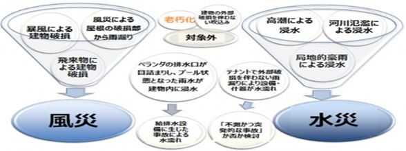

インフラ
インフラとは
インフラとは、「基盤となるもの」を意味する語である。社会が経済、産業、生活を営む
ために不可欠な設備、制度、サービスなどの総称。または組織の運用をした支えするシス
テムのこと。インフラと呼ばれる設備等のうち、道路、トンネル、信号機、鉄道やバスと
いった交通関連のインフラを「交通インフラ」という。上下水道は「水道インフラ」、公
衆交換電話網や移動体通信ネットワークは「通信インフラ」、IT 分野活動に用いられるイ
ンフラは「IT インフラ」と呼ばれている。そして地震や水害などに襲われた場合などは生
活に直結するインフラを生活インフラといい、生活インフラの復旧が最優先課題の１つに
位置づけられている。インフラの具体例はインフラの主な例は、道路、鉄道、上下水道、
電気、電話網、通信網、学校、病院、湾港やダムなどがあげられる。
インフラの問題点
私たちが普段使っている道路、河川、砂防、下水道、港湾、公営住宅、公園、海岸、空港、
航路標識、官庁施設などのインフラの老朽化が進んでいる。そのほとんどのインフラが高
度経済成長期の短期間に建設された。そしてこれらのインフラが建てられて４０～５０年
経過している。建設物の耐震性は多く見積もって 50 年が限界である。そしてインフラの
老朽化と予算不足が問題である。埼玉県宮代町での維持更新費のそれぞれの割合は、学校
が２０％、図書館・博物館や体育館などの公共施設が４％、庁舎・宿舎が９％、その他の
建築物が２％、道路・橋りょうが３３％、上水道が１３％、下水道が１０％を占める。こ
のことから土木インフラの費用が半分を超えていることが分かる。そして公共施設などの
費用を削減してその費用をゼロにしたとしても約３割しか削減されることしかできない。
道路や上水道などの土木インフラは国や市町村が管理している。国や市など予算が足りて
いる地域もあるが、ほとんどの地域ではインフラの整備の費用だけでは足らない。さらに
老朽化した道路など普段多くの人が使っているインフラは定期的に点検が必要である。地
方公共団体は定期的に点検を行える人の人員不足や人口減少による予算の不足によって構
造物の機能、サービス水準、安全性の低下が問題視されている。
インフラの老朽化による問題点
構造物の劣化過程には、潜伏期、進展期、加速期、劣化期がある。それぞれの課題として、
潜伏期と進展期の課題として設計時の情報や正常時の記録がない場合があること。補修・
補強箇所、対策工の効果を確認できないことがある。加速期の課題は緩やかな変位は目視
では把握できないことである。劣化期の課題として急速に劣化が進行する場合があること
である。その他にも劣化過程での課題がある。それは災害等による損傷の課題である。課
題の内容が遠隔地での災害、広範囲にわたる災害の場合損傷の把握に時間がかかること。
潜伏期、進展期、加速期、劣化期、災害等による損傷に関わらず全体としての課題は、点
検すべき対象箇所が多い、広範囲であること。点検できていない構造物や点検が困難な箇
所がある。そして目視や打音といった感覚的な手法の場合、点検結果に技術者によるばら
つきが発生することである。これらのことから日本はたくさんの課題点があることが分か
る。このままインフラの課題点が解決されずに、インフラが老朽化して壊れやすくなると、
インフラの被害が増加して都市機能を支える社会・経済活動にも被害が普及し、大きな社
会的損失が起こるかもしれないということである。例えば平成７年に起きた兵庫県南部地
震では、信号機の麻痺による交通渋滞や病院機能の低下などの行政サービス機能の低下が
みられる。そして日本では、将来大きな地震が起こるかもしれない。このままインフラを
放置し続ければ、たくさんのインフラがすぐに壊れ、多くの被害が生まれる可能性がある。

インフラの問題点とインフラ老朽化による問題点の解決策
国土交通省よりインフラ老朽化対策として今後建設してから 50 年以上経過しているイン
フラが増えてくることが予想される。なのでインフラが将来にわたって適切に機能を発揮
できるように維持管理・インフラの更新に係るトータルコストをできるだけ少なくするこ
ととインフラメンテナンスの高度化、効率化などが必要である。そして今後の技術展開と
して、維持管理・更新コストの一層の縮減のための技術開発や老朽化した社会資本ストッ
クによる人命に関わる事故を防ぐため、変状を迅速かつ確実に把握する技術開発が急がれ
ている。そして機能・費用を両立した維持管理・更新の実現のために新技術の導入や技術
開発を積極的に推進すること。また地域防災力の強化も必要がある。地域防災力の強化は
行政機関、民間企業、国民一人一人が意識・行動・仕組みに防災を考慮することがあたり
前の社会となることを構築することができるようにすることだと思う。他にも交通・物流
の機能確保である。災害が起こった時に救命・救助活動が行われ、災害発生後もなるべく
はやく復旧・復興するには道路ネットワークの強靭化が大事になってくる。そのために必
要なことは高規格道路と代替機能を発揮する直轄国道とのダブルネットワークの強化、そ
して災害に強い国土幹線道路ネットワークの構築、機能強化が重要になる。そして鉄道分
野において災害が起こった時の機能確保のために鉄道橋脚の流出・傾斜対策、土砂流入防
止対策、主要駅、トンネルなどの耐震対策の鉄道施設の老朽化対策が重要になる。
参考文献
[1]国土交通白書 2021「２ 災害リスクの増大や老朽化インフラの増加への対応」
https://www.mlit.go.jp/hakusyo/mlit/r02/hakusho/r03/html/n1312000.html
[2] 森 地 茂 「 防 災 ・ 減 災 と インフラ 整 備 」
https://www.jice.or.jp/cms/kokudo/pdf/tech/reports/30/jice_rpt30_02.pdf
[3] 内 閣 府 「 インフラ ・ ライフライン 等 の 被 害 へ の 対 応 」
https://www.bousai.go.jp/kaigirep/hakusho/h23/bousai2011/html/honbun/1b_1h_2s_2.ht
m
[4] 太 田 和 博 「 交 通 イ ン フ ラ 老 朽 化 へ の 政 策 対 応 」
https://www.jstage.jst.go.jp/article/iatssreview/44/3/44_160/_pdf/-char/ja
[5]根本 祐二「インフラ老朽化問題への望ましい対処のあり方」
https://www.toyo.ac.jp/uploaded/attachment/11543.pdf
[6]毎日新聞「国土交通省中部地方整備局：「災害対応力向上を」中部整備局長に堀田氏就
任」https://dbs.g-search.or.jp/aps/WSKR/main.jsp?ssid=20221219212732747gsh-ap02